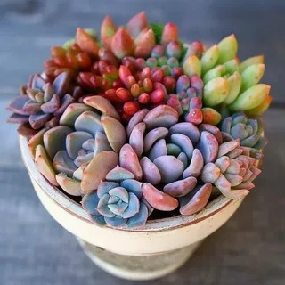
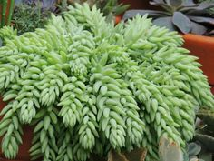
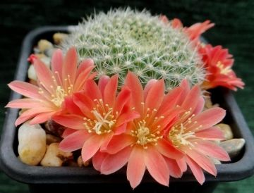
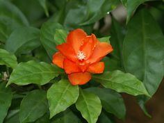
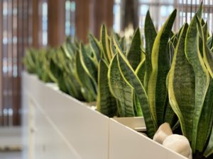

Суккуленты.Суккуле́нты — растения, обладающие специальными тканями для накопления воды. Обычно они произрастают в засушливых регионах.
Хавортия полосатая. хорошо известна всем любителям суккулентов. Более того, очень высока вероятность, что именно она запустила целую плеяду интересных растений - она идеально подходит для начинающих любителей суккулентов.

Очиток Моргана. Необычное растение очиток Моргана, которое еще именуют седум, является частью рода Очиток, который насчитывает не одну сотню разнообразных видов.

Ребуции. почти все крошечные, быстро растущие и рано зацветающие, легкие в уходе и даже порой размножаются самосевом

Перексия. то кактус, который кактусом вовсе не кажется, ведь у растения есть и листья, и самый обычный стебель, цветки перексий тоже не напоминают цветки кактусов, зато колючки в наличии!

Сансевиерия трехполосая. самый распространенный в культуре вид, именно она – «тещин язык» и «щучий хвост», неприхотливое широко известное комнатное растение,Очиток густолиственный. с полегающими побегами, густо покрытыми мелкими листочками, почвопокровный, цветки белые мелкие;Пахифитум. У кустика ползучие стебли, на которых располагаются округлые листики розово-серого или сине-зеленого оттенка. В нормальном состоянии они кажутся надутыми.Эхеверия. Она же каменная роза. Так ее называют за необычное расположение листьев: они располагаются по спирали, как бы формируя цветок.